The Virtual Filesystem (sometimes called the Virtual File Switch or more commonly simply the VFS) is the subsystem of the kernel that implements the file and filesystem-related interfaces provided to user-space programs. All filesystems rely on the VFS to enable them not only to coexist, but also to interoperate. This enables programs to use standard Unix system calls to read and write to different filesystems, even on different media, as shown in Figure 13.1.
Figure 13.1. The VFS in action: Using the cp(1) utility to move data from a hard disk mounted as ext3 to a removable disk mounted as ext2. Two different filesystems, two different media, one VFS.
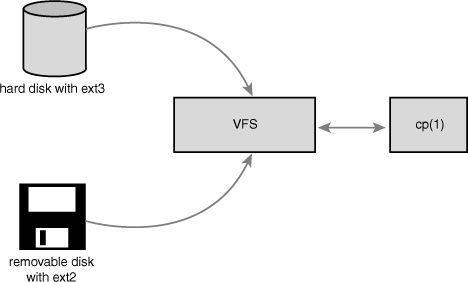
The VFS is the glue that enables system calls such as open(), read(), and write() to work regardless of the filesystem or underlying physical medium. These days, that might not sound novel—we have long been taking such a feature for granted—but it is a nontrivial feat for such generic system calls to work across many diverse filesystems and varying media. More so, the system calls work between these different filesystems and media—we can use standard system calls to copy or move files from one filesystem to another. In older operating systems, such as DOS, this would never have worked; any access to a non-native filesystem required special tools. It is only because modern operating systems, such as Linux, abstract access to the filesystems via a virtual interface that such interoperation and generic access is possible.
New filesystems and new varieties of storage media can find their way into Linux, and programs need not be rewritten or even recompiled. In this chapter, we will discuss the VFS, which provides the abstraction allowing myriad filesystems to behave as one. In the next chapter, we will discuss the block I/O layer, which allows various storage devices—CD to Blu-ray discs to hard drives to CompactFlash. Together, the VFS and the block I/O layer provide the abstractions, interfaces, and glue that allow user-space programs to issue generic system calls to access files via a uniform naming policy on any filesystem, which itself exists on any storage medium.
Such a generic interface for any type of filesystem is feasible only because the kernel implements an abstraction layer around its low-level filesystem interface. This abstraction layer enables Linux to support different filesystems, even if they differ in supported features or behavior. This is possible because the VFS provides a common file model that can represent any filesystem’s general feature set and behavior. Of course, it is biased toward Unix-style filesystems. (You see what constitutes a Unix-style filesystem later in this chapter.) Regardless, wildly differing filesystem types are still supportable in Linux, from DOS’s FAT to Windows’s NTFS to many Unix-style and Linux-specific filesystems.
The abstraction layer works by defining the basic conceptual interfaces and data structures that all filesystems support. The filesystems mold their view of concepts such as “this is how I open files” and “this is what a directory is to me” to match the expectations of the VFS. The actual filesystem code hides the implementation details. To the VFS layer and the rest of the kernel, however, each filesystem looks the same. They all support notions such as files and directories, and they all support operations such as creating and deleting files.
The result is a general abstraction layer that enables the kernel to support many types of filesystems easily and cleanly. The filesystems are programmed to provide the abstracted interfaces and data structures the VFS expects; in turn, the kernel easily works with any filesystem and the exported user-space interface seamlessly works on any filesystem.
In fact, nothing in the kernel needs to understand the underlying details of the filesystems, except the filesystems themselves. For example, consider a simple user-space program that does
ret = write (fd, buf, len);
This system call writes the len bytes pointed to by buf into the current position in the file represented by the file descriptor fd. This system call is first handled by a generic sys_write() system call that determines the actual file writing method for the filesystem on which fd resides. The generic write system call then invokes this method, which is part of the filesystem implementation, to write the data to the media (or whatever this filesystem does on write). Figure 13.2 shows the flow from user-space’s write() call through the data arriving on the physical media. On one side of the system call is the generic VFS interface, providing the frontend to user-space; on the other side of the system call is the filesystem-specific backend, dealing with the implementation details. The rest of this chapter looks at how the VFS achieves this abstraction and provides its interfaces.
Figure 13.2. The flow of data from user-space issuing a write() call, through the VFS’s generic system call, into the filesystem’s specific write method, and finally arriving at the physical media.
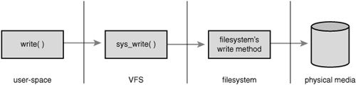
Historically, Unix has provided four basic filesystem-related abstractions: files, directory entries, inodes, and mount points.
A filesystem is a hierarchical storage of data adhering to a specific structure. Filesystems contain files, directories, and associated control information. Typical operations performed on filesystems are creation, deletion, and mounting. In Unix, filesystems are mounted at a specific mount point in a global hierarchy known as a namespace.1 This enables all mounted filesystems to appear as entries in a single tree. Contrast this single, unified tree with the behavior of DOS and Windows, which break the file namespace up into drive letters, such as C:. This breaks the namespace up among device and partition boundaries, “leaking” hardware details into the filesystem abstraction. As this delineation may be arbitrary and even confusing to the user, it is inferior to Linux’s unified namespace.
1 Recently, Linux has made this hierarchy per-process, to give a unique namespace to each process. Because each process inherits its parent’s namespace (unless you specify otherwise), there is seemingly one global namespace.
A file is an ordered string of bytes. The first byte marks the beginning of the file, and the last byte marks the end of the file. Each file is assigned a human-readable name for identification by both the system and the user. Typical file operations are read, write, create, and delete. The Unix concept of the file is in stark contrast to record-oriented filesystems, such as OpenVMS’s Files-11. Record-oriented filesystems provide a richer, more structured representation of files than Unix’s simple byte-stream abstraction, at the cost of simplicity and flexibility.
Files are organized in directories. A directory is analogous to a folder and usually contains related files. Directories can also contain other directories, called subdirectories. In this fashion, directories may be nested to form paths. Each component of a path is called a directory entry. A path example is /home/wolfman/butter—the root directory /, the directories home and wolfman, and the file butter are all directory entries, called dentries. In Unix, directories are actually normal files that simply list the files contained therein. Because a directory is a file to the VFS, the same operations performed on files can be performed on directories.
Unix systems separate the concept of a file from any associated information about it, such as access permissions, size, owner, creation time, and so on. This information is sometimes called file metadata (that is, data about the file’s data) and is stored in a separate data structure from the file, called the inode. This name is short for index node, although these days the term inode is much more ubiquitous.
All this information is tied together with the filesystem’s own control information, which is stored in the superblock. The superblock is a data structure containing information about the filesystem as a whole. Sometimes the collective data is referred to as filesystem metadata. Filesystem metadata includes information about both the individual files and the filesystem as a whole.
Traditionally, Unix filesystems implement these notions as part of their physical on-disk layout. For example, file information is stored as an inode in a separate block on the disk; directories are files; control information is stored centrally in a superblock, and so on. The Unix file concepts are physically mapped on to the storage medium. The Linux VFS is designed to work with filesystems that understand and implement such concepts. Non-Unix filesystems, such as FAT or NTFS, still work in Linux, but their filesystem code must provide the appearance of these concepts. For example, even if a filesystem does not support distinct inodes, it must assemble the inode data structure in memory as if it did. Or if a filesystem treats directories as a special object, to the VFS they must represent directories as mere files. Often, this involves some special processing done on-the-fly by the non-Unix filesystems to cope with the Unix paradigm and the requirements of the VFS. Such filesystems still work, however, and the overhead is not unreasonable.
The VFS is object-oriented.2 A family of data structures represents the common file model. These data structures are akin to objects. Because the kernel is programmed strictly in C, without the benefit of a language directly supporting object-oriented paradigms, the data structures are represented as C structures. The structures contain both data and pointers to filesystem-implemented functions that operate on the data.
2 People often miss this, or even deny it, but there are many examples of object-oriented programming in the kernel. Although the kernel developers may shun C++ and other explicitly object-oriented languages, thinking in terms of objects is often useful. The VFS is a good example of how to do clean and efficient OOP in C, which is a language that lacks any OOP constructs.
The four primary object types of the VFS are
• The superblock object, which represents a specific mounted filesystem.
• The inode object, which represents a specific file.
• The dentry object, which represents a directory entry, which is a single component of a path.
• The file object, which represents an open file as associated with a process.
Note that because the VFS treats directories as normal files, there is not a specific directory object. Recall from earlier in this chapter that a dentry represents a component in a path, which might include a regular file. In other words, a dentry is not the same as a directory, but a directory is just another kind of file. Got it?
An operations object is contained within each of these primary objects. These objects describe the methods that the kernel invokes against the primary objects:
• The
super_operationsobject, which contains the methods that the kernel can invoke on a specific filesystem, such aswrite_inode()andsync_fs()
• The
inode_operationsobject, which contains the methods that the kernel can invoke on a specific file, such ascreate()andlink()
• The
dentry_operationsobject, which contains the methods that the kernel can invoke on a specific directory entry, such asd_compare()andd_delete()
• The
file_operationsobject, which contains the methods that a process can invoke on an open file, such asread()andwrite()
The operations objects are implemented as a structure of pointers to functions that operate on the parent object. For many methods, the objects can inherit a generic function if basic functionality is sufficient. Otherwise, the specific instance of the particular filesystem fills in the pointers with its own filesystem-specific methods.
Again, note that objects refer to structures—not explicit class types, such as those in C++ or Java. These structures, however, represent specific instances of an object, their associated data, and methods to operate on themselves. They are very much objects.
The VFS loves structures, and it is comprised of a couple more than the primary objects previously discussed. Each registered filesystem is represented by a file_system_type structure. This object describes the filesystem and its capabilities. Furthermore, each mount point is represented by the vfsmount structure. This structure contains information about the mount point, such as its location and mount flags.
Finally, two per-process structures describe the filesystem and files associated with a process. They are, respectively, the fs_struct structure and the file structure.
The rest of this chapter discusses these objects and the role they play in implementing the VFS layer.
The superblock object is implemented by each filesystem and is used to store information describing that specific filesystem. This object usually corresponds to the filesystem superblock or the filesystem control block, which is stored in a special sector on disk (hence the object’s name). Filesystems that are not disk-based (a virtual memory–based filesystem, such as sysfs, for example) generate the superblock on-the-fly and store it in memory.
The superblock object is represented by struct super_block and defined in <linux/fs.h>. Here is what it looks like, with comments describing each entry:
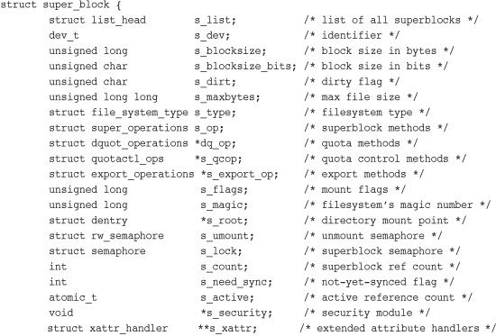
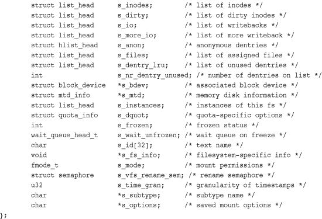
The code for creating, managing, and destroying superblock objects lives in fs/super.c. A superblock object is created and initialized via the alloc_super() function. When mounted, a filesystem invokes this function, reads its superblock off of the disk, and fills in its superblock object.
The most important item in the superblock object is s_op, which is a pointer to the superblock operations table. The superblock operations table is represented by struct super_operations and is defined in <linux/fs.h>. It looks like this:
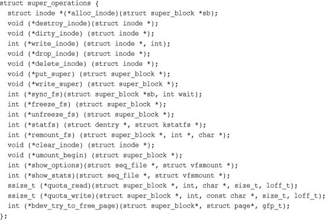
Each item in this structure is a pointer to a function that operates on a superblock object. The superblock operations perform low-level operations on the filesystem and its inodes.
When a filesystem needs to perform an operation on its superblock, it follows the pointers from its superblock object to the desired method. For example, if a filesystem wanted to write to its superblock, it would invoke
sb->s_op->write_super(sb);
In this call, sb is a pointer to the filesystem’s superblock. Following that pointer into s_op yields the superblock operations table and ultimately the desired write_super() function, which is then invoked. Note how the write_super() call must be passed a superblock, despite the method being associated with one. This is because of the lack of object-oriented support in C. In C++, a call such as the following would suffice:
sb.write_super();
In C, there is no way for the method to easily obtain its parent, so you have to pass it.
Let’s take a look at some of the superblock operations that are specified by super_operations:
•
struct inode * alloc_inode(struct super_block *sb)
Creates and initializes a new inode object under the given superblock.
•
void destroy_inode(struct inode *inode)
Deallocates the given inode.
•
void dirty_inode(struct inode *inode)
Invoked by the VFS when an inode is dirtied (modified). Journaling filesystems such as ext3 and ext4 use this function to perform journal updates.
•
void write_inode(struct inode *inode, int wait)
Writes the given inode to disk. The
waitparameter specifies whether the operation should be synchronous.
•
void drop_inode(struct inode *inode)
Called by the VFS when the last reference to an inode is dropped. Normal Unix filesystems do not define this function, in which case the VFS simply deletes the inode.
•
void delete_inode(struct inode *inode)
Deletes the given inode from the disk.
•
void put_super(struct super_block *sb)
Called by the VFS on unmount to release the given superblock object. The caller must hold the
s_locklock.
•
void write_super(struct super_block *sb)
Updates the on-disk superblock with the specified superblock. The VFS uses this function to synchronize a modified in-memory superblock with the disk. The caller must hold the
s_locklock.
•
int sync_fs(struct super_block *sb, int wait)
Synchronizes filesystem metadata with the on-disk filesystem. The
waitparameter specifies whether the operation is synchronous.
•
void write_super_lockfs(struct super_block *sb)
Prevents changes to the filesystem, and then updates the on-disk superblock with the specified superblock. It is currently used by LVM (the Logical Volume Manager).
•
void unlockfs(struct super_block *sb)
Unlocks the filesystem against changes as done by
write_super_lockfs().
•
int statfs(struct super_block *sb, struct statfs *statfs)
Called by the VFS to obtain filesystem statistics. The statistics related to the given filesystem are placed in
statfs.
•
int remount_fs(struct super_block *sb, int *flags, char *data)
Called by the VFS when the filesystem is remounted with new mount options. The caller must hold the
s_locklock.
•
void clear_inode(struct inode *inode)
Called by the VFS to release the inode and clear any pages containing related data.
•
void umount_begin(struct super_block *sb)
Called by the VFS to interrupt a mount operation. It is used by network filesystems, such as NFS.
All these functions are invoked by the VFS, in process context. All except dirty_inode() may all block if needed.
Some of these functions are optional; a specific filesystem can then set its value in the superblock operations structure to NULL. If the associated pointer is NULL, the VFS either calls a generic function or does nothing, depending on the operation.
The inode object represents all the information needed by the kernel to manipulate a file or directory. For Unix-style filesystems, this information is simply read from the on-disk inode. If a filesystem does not have inodes, however, the filesystem must obtain the information from wherever it is stored on the disk. Filesystems without inodes generally store file-specific information as part of the file; unlike Unix-style filesystems, they do not separate file data from its control information. Some modern filesystems do neither and store file metadata as part of an on-disk database. Whatever the case, the inode object is constructed in memory in whatever manner is applicable to the filesystem.
The inode object is represented by struct inode and is defined in <linux/fs.h>. Here is the structure, with comments describing each entry:
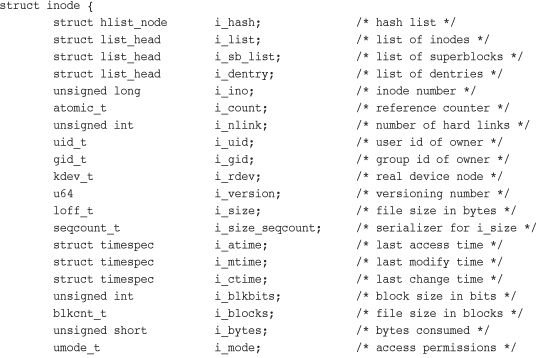
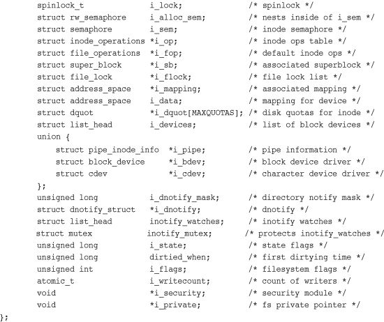
An inode represents each file on a filesystem, but the inode object is constructed in memory only as files are accessed. This includes special files, such as device files or pipes. Consequently, some of the entries in struct inode are related to these special files. For example, the i_pipe entry points to a named pipe data structure, i_bdev points to a block device structure, and i_cdev points to a character device structure. These three pointers are stored in a union because a given inode can represent only one of these (or none of them) at a time.
It might occur that a given filesystem does not support a property represented in the inode object. For example, some filesystems might not record an access timestamp. In that case, the filesystem is free to implement the feature however it sees fit; it can store zero for i_atime, make i_atime equal to i_mtime, update i_atime in memory but never flush it back to disk, or whatever else the filesystem implementer decides.
As with the superblock operations, the inode_operations member is important. It describes the filesystem’s implemented functions that the VFS can invoke on an inode. As with the superblock, inode operations are invoked via
i->i_op->truncate(i)
In this call, i is a reference to a particular inode. In this case, the truncate() operation defined by the filesystem on which i exists is called on the given inode. The inode_operations structure is defined in <linux/fs.h>:
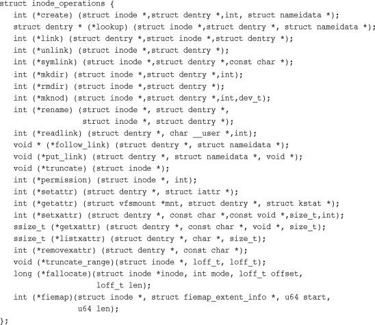
The following interfaces constitute the various functions that the VFS may perform, or ask a specific filesystem to perform, on a given inode:
•
int create(struct inode *dir, struct dentry *dentry, int mode)
The VFS calls this function from the
creat()andopen()system calls to create a new inode associated with the given dentry object with the specified initial access mode.
•
struct dentry * lookup(struct inode *dir, struct dentry *dentry)
This function searches a directory for an inode corresponding to a filename specified in the given dentry.
•
int link(struct dentry *old_dentry,
struct inode *dir,
struct dentry *dentry)
Invoked by the
link()system call to create a hard link of the fileold_dentryin the directorydirwith the new filenamedentry.
•
int unlink(struct inode *dir,
struct dentry *dentry)
Called from the
unlink()system call to remove the inode specified by the directory entrydentryfrom the directorydir.
•
int symlink(struct inode *dir,
struct dentry *dentry,
const char *symname)
Called from the
symlink()system call to create a symbolic link namedsymnameto the file represented bydentryin the directorydir.
•
int mkdir(struct inode *dir,
struct dentry *dentry,
int mode)
Called from the
mkdir()system call to create a new directory with the given initial mode.
•
int rmdir(struct inode *dir,
struct dentry *dentry)
Called by the
rmdir()system call to remove the directory referenced bydentryfrom the directorydir.
•
int mknod(struct inode *dir,
struct dentry *dentry,
int mode, dev_t rdev)
Called by the
mknod()system call to create a special file (device file, named pipe, or socket). The file is referenced by the devicerdevand the directory entrydentryin the directorydir. The initial permissions are given viamode.
•
int rename(struct inode *old_dir,
struct dentry *old_dentry,
struct inode *new_dir,
struct dentry *new_dentry)
Called by the VFS to move the file specified by
old_dentryfrom theold_dirdirectory to the directorynew_dir, with the filename specified bynew_dentry.
•
int readlink(struct dentry *dentry,
char *buffer, int buflen)
Called by the
readlink()system call to copy at mostbuflenbytes of the full path associated with the symbolic link specified bydentryinto the specified buffer.
•
int follow_link(struct dentry *dentry,
struct nameidata *nd)
Called by the VFS to translate a symbolic link to the inode to which it points. The link pointed at by
dentryis translated, and the result is stored in thenameidatastructure pointed at bynd.
•
int put_link(struct dentry *dentry,
struct nameidata *nd)
Called by the VFS to clean up after a call to
follow_link().
•
void truncate(struct inode *inode)
Called by the VFS to modify the size of the given file. Before invocation, the inode’s
i_sizefield must be set to the desired new size.
•
int permission(struct inode *inode, int mask)
Checks whether the specified access mode is allowed for the file referenced by
inode. This function returns zero if the access is allowed and a negative error code otherwise. Most filesystems set this field toNULLand use the generic VFS method, which simply compares the mode bits in the inode’s objects to the given mask. More complicated filesystems, such as those supporting access control lists (ACLs), have a specificpermission()method.
•
int setattr(struct dentry *dentry,
struct iattr *attr)
Called from
notify_change()to notify a “change event” after an inode has been modified.
•
int getattr(struct vfsmount *mnt,
struct dentry *dentry,
struct kstat *stat)
Invoked by the VFS upon noticing that an inode needs to be refreshed from disk. Extended attributes allow the association of key/values pairs with files.
•
int setxattr(struct dentry *dentry,
const char *name,
const void *value, size_t size,
int flags)
Used by the VFS to set the extended attribute
nameto the valuevalueon the file referenced bydentry.
•
ssize_t getxattr(struct dentry *dentry,
const char *name,
void *value, size_t size)
Used by the VFS to copy into
valuethe value of the extended attributenamefor the specified file.
•
ssize_t listxattr(struct dentry *dentry,
char *list, size_t size)
Copies the list of all attributes for the specified file into the buffer
list.
•
int removexattr(struct dentry *dentry,
const char *name)
Removes the given attribute from the given file.
As discussed, the VFS treats directories as a type of file. In the path /bin/vi, both bin and vi are files—bin being the special directory file and vi being a regular file. An inode object represents each of these components. Despite this useful unification, the VFS often needs to perform directory-specific operations, such as path name lookup. Path name lookup involves translating each component of a path, ensuring it is valid, and following it to the next component.
To facilitate this, the VFS employs the concept of a directory entry (dentry). A dentry is a specific component in a path. Using the previous example, /, bin, and vi are all dentry objects. The first two are directories and the last is a regular file. This is an important point: Dentry objects are all components in a path, including files. Resolving a path and walking its components is a nontrivial exercise, time-consuming and heavy on string operations, which are expensive to execute and cumbersome to code. The dentry object makes the whole process easier.
Dentries might also include mount points. In the path /mnt/cdrom/foo, the components /, mnt, cdrom, and foo are all dentry objects. The VFS constructs dentry objects on-the-fly, as needed, when performing directory operations.
Dentry objects are represented by struct dentry and defined in <linux/dcache.h>. Here is the structure, with comments describing each member:
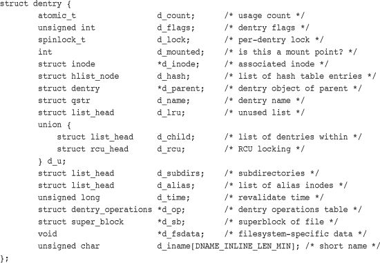
Unlike the previous two objects, the dentry object does not correspond to any sort of on-disk data structure. The VFS creates it on-the-fly from a string representation of a path name. Because the dentry object is not physically stored on the disk, no flag in struct dentry specifies whether the object is modified (that is, whether it is dirty and needs to be written back to disk).
A valid dentry object can be in one of three states: used, unused, or negative.
A used dentry corresponds to a valid inode (d_inode points to an associated inode) and indicates that there are one or more users of the object (d_count is positive). A used dentry is in use by the VFS and points to valid data and, thus, cannot be discarded.
An unused dentry corresponds to a valid inode (d_inode points to an inode), but the VFS is not currently using the dentry object (d_count is zero). Because the dentry object still points to a valid object, the dentry is kept around—cached—in case it is needed again. Because the dentry has not been destroyed prematurely, the dentry need not be re-created if it is needed in the future, and path name lookups can complete quicker than if the dentry was not cached. If it is necessary to reclaim memory, however, the dentry can be discarded because it is not in active use.
A negative dentry is not associated with a valid inode (d_inode is NULL) because either the inode was deleted or the path name was never correct to begin with. The dentry is kept around, however, so that future lookups are resolved quickly. For example, consider a daemon that continually tries to open and read a config file that is not present. The open() system calls continually returns ENOENT, but not until after the kernel constructs the path, walks the on-disk directory structure, and verifies the file’s inexistence. Because even this failed lookup is expensive, caching the “negative” results are worthwhile. Although a negative dentry is useful, it can be destroyed if memory is at a premium because nothing is actually using it.
A dentry object can also be freed, sitting in the slab object cache, as discussed in the previous chapter. In that case, there is no valid reference to the dentry object in any VFS or any filesystem code.
After the VFS layer goes through the trouble of resolving each element in a path name into a dentry object and arriving at the end of the path, it would be quite wasteful to throw away all that work. Instead, the kernel caches dentry objects in the dentry cache or, simply, the dcache.
The dentry cache consists of three parts:
• Lists of “used” dentries linked off their associated inode via the
i_dentryfield of the inode object. Because a given inode can have multiple links, there might be multiple dentry objects; consequently, a list is used.
• A doubly linked “least recently used” list of unused and negative dentry objects. The list is inserted at the head, such that entries toward the head of the list are newer than entries toward the tail. When the kernel must remove entries to reclaim memory, the entries are removed from the tail; those are the oldest and presumably have the least chance of being used in the near future.
• A hash table and hashing function used to quickly resolve a given path into the associated dentry object.
The hash table is represented by the dentry_hashtable array. Each element is a pointer to a list of dentries that hash to the same value. The size of this array depends on the amount of physical RAM in the system.
The actual hash value is determined by d_hash(). This enables filesystems to provide a unique hashing function.
Hash table lookup is performed via d_lookup(). If a matching dentry object is found in the dcache, it is returned. On failure, NULL is returned.
As an example, assume that you are editing a source file in your home directory, /home/dracula/src/the_sun_sucks.c. Each time this file is accessed (for example, when you first open it, later save it, compile it, and so on), the VFS must follow each directory entry to resolve the full path: /, home, dracula, src, and finally the_sun_sucks.c. To avoid this time-consuming operation each time this path name is accessed, the VFS can first try to look up the path name in the dentry cache. If the lookup succeeds, the required final dentry object is obtained without serious effort. Conversely, if the dentry is not in the dentry cache, the VFS must manually resolve the path by walking the filesystem for each component of the path. After this task is completed, the kernel adds the dentry objects to the dcache to speed up any future lookups.
The dcache also provides the front end to an inode cache, the icache. Inode objects that are associated with dentry objects are not freed because the dentry maintains a positive usage count over the inode. This enables dentry objects to pin inodes in memory. As long as the dentry is cached, the corresponding inodes are cached, too. Consequently, when a path name lookup succeeds from cache, as in the previous example, the associated inodes are already cached in memory.
Caching dentries and inodes is beneficial because file access exhibits both spatial and temporal locality. File access is temporal in that programs tend to access and reaccess the same files over and over. Thus when a file is accessed, there is a high probability that caching the associated dentries and inodes will result in a cache hit in the near future. File access is spatial in that programs tend to access multiple files in the same directory. Thus caching directories entries for one file have a high probability of a cache hit, as a related file is likely manipulated next.
The dentry_operations structure specifies the methods that the VFS invokes on directory entries on a given filesystem.
The dentry_operations structure is defined in <linux/dcache.h>:
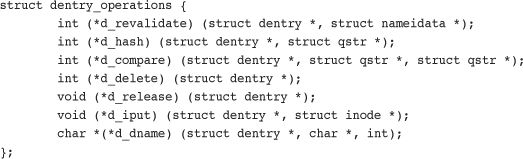
The methods are as follows:
•
int d_revalidate(struct dentry *dentry,
struct nameidata *)
Determines whether the given dentry object is valid. The VFS calls this function whenever it is preparing to use a dentry from the dcache. Most filesystems set this method to
NULLbecause their dentry objects in the dcache are always valid.
•
int d_hash(struct dentry *dentry,
struct qstr *name)
Creates a hash value from the given dentry. The VFS calls this function whenever it adds a dentry to the hash table.
•
int d_compare(struct dentry *dentry,
struct qstr *name1,
struct qstr *name2)
Called by the VFS to compare two filenames,
name1andname2. Most filesystems leave this at the VFS default, which is a simple string compare. For some filesystems, such as FAT, a simple string compare is insufficient. The FAT filesystem is not case-sensitive and therefore needs to implement a comparison function that disregards case. This function requires thedcache_lock.
•
int d_delete (struct dentry *dentry)
Called by the VFS when the specified dentry object’s
d_countreaches zero. This function requires thedcache_lockand the dentry’sd_lock.
•
void d_release(struct dentry *dentry)
Called by the VFS when the specified dentry is going to be freed. The default function does nothing.
•
void d_iput(struct dentry *dentry,
struct inode *inode)
Called by the VFS when a dentry object loses its associated inode (say, because the entry was deleted from the disk). By default, the VFS simply calls the
iput()function to release the inode. If a filesystem overrides this function, it must also calliput()in addition to performing whatever filesystem-specific work it requires.
The final primary VFS object that we shall look at is the file object. The file object is used to represent a file opened by a process. When we think of the VFS from the perspective of user-space, the file object is what readily comes to mind. Processes deal directly with files, not superblocks, inodes, or dentries. It is not surprising that the information in the file object is the most familiar (data such as access mode and current offset) or that the file operations are familiar system calls such as read() and write().
The file object is the in-memory representation of an open file. The object (but not the physical file) is created in response to the open() system call and destroyed in response to the close() system call. All these file-related calls are actually methods defined in the file operations table. Because multiple processes can open and manipulate a file at the same time, there can be multiple file objects in existence for the same file. The file object merely represents a process’s view of an open file. The object points back to the dentry (which in turn points back to the inode) that actually represents the open file. The inode and dentry objects, of course, are unique.
The file object is represented by struct file and is defined in <linux/fs.h>. Let’s look at the structure, again with comments added to describe each entry:
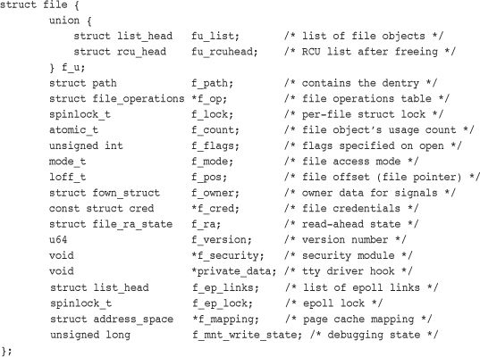
Similar to the dentry object, the file object does not actually correspond to any on-disk data. Therefore, no flag in the object represents whether the object is dirty and needs to be written back to disk. The file object does point to its associated dentry object via the f_dentry pointer. The dentry in turn points to the associated inode, which reflects whether the file itself is dirty.
As with all the other VFS objects, the file operations table is quite important. The operations associated with struct file are the familiar system calls that form the basis of the standard Unix system calls.
The file object methods are specified in file_operations and defined in <linux/fs.h>:
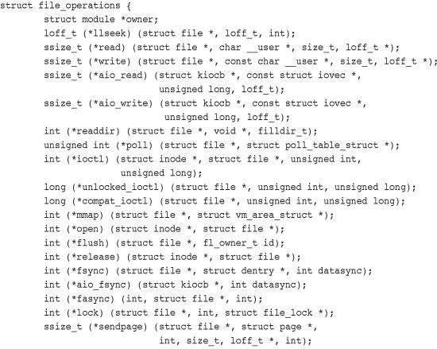
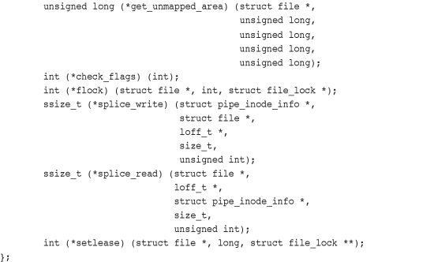
Filesystems can implement unique functions for each of these operations, or they can use a generic method if one exists. The generic methods tend to work fine on normal Unix-based filesystems. A filesystem is under no obligation to implement all these methods—although not implementing the basics is silly—and can simply set the method to NULL if not interested.
Here are the individual operations:
•
loff_t llseek(struct file *file,
loff_t offset, int origin)
Updates the file pointer to the given offset. It is called via the
llseek()system call.
•
ssize_t read(struct file *file,
char *buf, size_t count,
loff_t *offset)
Reads
countbytes from the given file at positionoffsetintobuf. The file pointer is then updated. This function is called by theread()system call.
•
ssize_t aio_read(struct kiocb *iocb,
char *buf, size_t count,
loff_t offset)
Begins an asynchronous read of
countbytes intobufof the file described iniocb. This function is called by theaio_read()system call.
•
ssize_t write(struct file *file,
const char *buf, size_t count,
loff_t *offset)
Writes
countbytes frombufinto the given file at positionoffset. The file pointer is then updated. This function is called by thewrite()system call.
•
ssize_t aio_write(struct kiocb *iocb,
const char *buf,
size_t count, loff_t offset)
Begins an asynchronous write of
countbytes intobufof the file described iniocb. This function is called by theaio_write()system call.
•
int readdir(struct file *file, void *dirent,
filldir_t filldir)
Returns the next directory in a directory listing. This function is called by the
readdir()system call.
•
unsigned int poll(struct file *file,
struct poll_table_struct *poll_table)
Sleeps, waiting for activity on the given file. It is called by the
poll()system call.
•
int ioctl(struct inode *inode,
struct file *file,
unsigned int cmd,
unsigned long arg)
Sends a command and argument pair to a device. It is used when the file is an open device node. This function is called from the
ioctl()system call. Callers must hold the BKL.
•
int unlocked_ioctl(struct file *file,
unsigned int cmd,
unsigned long arg)
Implements the same functionality as
ioctl()but without needing to hold the BKL. The VFS callsunlocked_ioctl()if it exists in lieu ofioctl()when user-space invokes the ioctl() system call. Thus filesystems need implement only one, preferablyunlocked_ioctl().
•
int compat_ioctl(struct file *file,
unsigned int cmd,
unsigned long arg)
Implements a portable variant of
ioctl()for use on 64-bit systems by 32-bit applications. This function is designed to be 32-bit safe even on 64-bit architectures, performing any necessary size conversions. New drivers should design their ioctl commands such that all are portable, and thus enablecompat_ioctl()andunlocked_ioctl()to point to the same function. Likeunlocked_ioctl(),compat_ioctl()does not hold the BKL.
•
int mmap(struct file *file,
struct vm_area_struct *vma)
Memory maps the given file onto the given address space and is called by the
mmap()system call.
•
int open(struct inode *inode,
struct file *file)
Creates a new file object and links it to the corresponding inode object. It is called by the
open()system call.
•
int flush(struct file *file)
Called by the VFS whenever the reference count of an open file decreases. Its purpose is filesystem-dependent.
•
int release(struct inode *inode,
struct file *file)
Called by the VFS when the last remaining reference to the file is destroyed—for example, when the last process sharing a file descriptor calls
close()or exits. Its purpose is filesystem-dependent.
•
int fsync(struct file *file,
struct dentry *dentry,
int datasync)
Called by the
fsync()system call to write all cached data for the file to disk.
•
int aio_fsync(struct kiocb *iocb,
int datasync)
Called by the
aio_fsync()system call to write all cached data for the file associated withiocbto disk.
•
int fasync(int fd, struct file *file, int on)
Enables or disables signal notification of asynchronous I/O.
•
int lock(struct file *file, int cmd,
struct file_lock *lock)
Manipulates a file lock on the given file.
•
ssize_t readv(struct file *file,
const struct iovec *vector,
unsigned long count,
loff_t *offset)
Called by the
readv()system call to read from the given file and put the results into thecountbuffers described byvector. The file offset is then incremented.
•
ssize_t writev(struct file *file,
const struct iovec *vector,
unsigned long count,
loff_t *offset)
Called by the
writev()system call to write from thecountbuffers described byvectorinto the file specified byfile. The file offset is then incremented.
•
ssize_t sendfile(struct file *file,
loff_t *offset,
size_t size,
read_actor_t actor,
void *target)
Called by the
sendfile()system call to copy data from one file to another. It performs the copy entirely in the kernel and avoids an extraneous copy to user-space.
•
ssize_t sendpage(struct file *file,
struct page *page,
int offset, size_t size,
loff_t *pos, int more)
Used to send data from one file to another.
•
unsigned long get_unmapped_area(struct file *file,
unsigned long addr,
unsigned long len,
unsigned long offset,
unsigned long flags)
Gets unused address space to map the given file.
•
int check_flags(int flags)
Used to check the validity of the flags passed to the
fcntl()system call when theSETFLcommand is given. As with many VFS operations, filesystems need not implementcheck_flags(); currently, only NFS does so. This function enables filesystems to restrict invalidSETFLflags otherwise enabled by the genericfcntl()function. In the case of NFS, combiningO_APPENDandO_DIRECTis not enabled.
•
int flock(struct file *filp,
int cmd,
struct file_lock *fl)
Used to implement the
flock()system call, which provides advisory locking.
So Many Ioctls!
Not long ago, there existed only a single ioctl method. Today, there are three methods.
unlocked_ioctl()is the same asioctl(), except it is called without the Big Kernel Lock (BKL). It is thus up to the author of that function to ensure proper synchronization. Because the BKL is a coarse-grained, inefficient lock, drivers should implementunlocked_ioctl()and notioctl().
compat_ioctl()is also called without the BKL, but its purpose is to provide a 32-bit compatible ioctl method for 64-bit systems. How you implement it depends on your existing ioctl commands. Older drivers with implicitly sized types (such aslong) should implement acompat_ioctl()method that works appropriately with 32-bit applications. This generally means translating the 32-bit values to the appropriate types for a 64-bit kernel. New drivers that have the luxury of designing their ioctl commands from scratch should ensure all their arguments and data are explicitly sized, safe for 32-bit apps on a 32-bit system, 32-bit apps on a 64-bit system, and 64-bit apps on a 64-bit system. These drivers can then point thecompat_ioctl()function pointer at the same function asunlocked_ioctl().
In addition to the fundamental VFS objects, the kernel uses other standard data structures to manage data related to filesystems. The first object is used to describe a specific variant of a filesystem, such as ext3, ext4, or UDF. The second data structure describes a mounted instance of a filesystem.
Because Linux supports so many different filesystems, the kernel must have a special structure for describing the capabilities and behavior of each filesystem. The file_system_type structure, defined in <linux/fs.h>, accomplishes this:
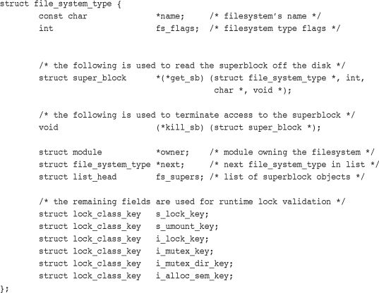
The get_sb() function reads the superblock from the disk and populates the superblock object when the filesystem is loaded. The remaining functions describe the filesystem’s properties.
There is only one file_system_type per filesystem, regardless of how many instances of the filesystem are mounted on the system, or whether the filesystem is even mounted at all.
Things get more interesting when the filesystem is actually mounted, at which point the vfsmount structure is created. This structure represents a specific instance of a filesystem—in other words, a mount point.
The vfsmount structure is defined in <linux/mount.h>. Here it is:
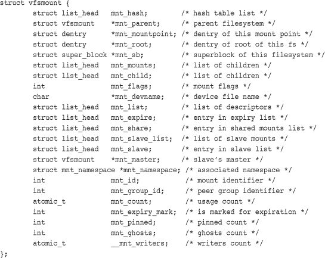
The complicated part of maintaining the list of all mount points is the relation between the filesystem and all the other mount points. The various linked lists in vfsmount keep track of this information.
The vfsmount structure also stores the flags, if any, specified on mount in the mnt_flags field. Table 13.1 is a list of the standard mount flags.
Table 13.1. Standard Mount Flags
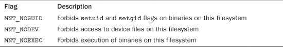
These flags are most useful on removable devices that the administrator does not trust. They are defined in <linux/mount.h> along with other, lesser used, flags.
Each process on the system has its own list of open files, root filesystem, current working directory, mount points, and so on. Three data structures tie together the VFS layer and the processes on the system: files_struct, fs_struct, and namespace.
The files_struct is defined in <linux/fdtable.h>. This table’s address is pointed to by the files entry in the processor descriptor. All per-process information about open files and file descriptors is contained therein. Here it is, with comments:
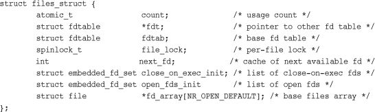
The array fd_array points to the list of open file objects. Because NR_OPEN_DEFAULT is equal to BITS_PER_LONG, which is 64 on a 64-bit architecture; this includes room for 64 file objects. If a process opens more than 64 file objects, the kernel allocates a new array and points the fdt pointer at it. In this fashion, access to a reasonable number of file objects is quick, taking place in a static array. If a process opens an abnormal number of files, the kernel can create a new array. If the majority of processes on a system opens more than 64 files, for optimum performance the administrator can increase the NR_OPEN_DEFAULT preprocessor macro to match.
The second process-related structure is fs_struct, which contains filesystem information related to a process and is pointed at by the fs field in the process descriptor. The structure is defined in <linux/fs_struct.h>. Here it is, with comments:
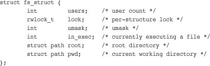
This structure holds the current working directory (pwd) and root directory of the current process.
The third and final structure is the namespace structure, which is defined in <linux/mnt_namespace.h> and pointed at by the mnt_namespace field in the process descriptor. Per-process namespaces were added to the 2.4 Linux kernel. They enable each process to have a unique view of the mounted filesystems on the system—not just a unique root directory, but an entirely unique filesystem hierarchy. Here is the structure, with the usual comments:
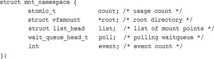
The list member specifies a doubly linked list of the mounted filesystems that make up the namespace.
These data structures are linked from each process descriptor. For most processes, the process descriptor points to unique files_struct and fs_struct structures. For processes created with the clone flag CLONE_FILES or CLONE_FS, however, these structures are shared.3 Consequently, multiple process descriptors might point to the same files_struct or fs_struct structure. The count member of each structure provides a reference count to prevent destruction while a process is still using the structure.
3
Threads usually specify
CLONE_FILES
and
CLONE_FS
and, thus, share a single
files_struct
and
fs_struct
among themselves. Normal processes, on the other hand, do not specify these flags and consequently have their own filesystems information and open files tables.
The namespace structure works the other way around. By default, all processes share the same namespace. (That is, they all see the same filesystem hierarchy from the same mount table.) Only when the CLONE_NEWNS flag is specified during clone() is the process given a unique copy of the namespace structure. Because most processes do not provide this flag, all the processes inherit their parents’ namespaces. Consequently, on many systems there is only one namespace, although the functionality is but a single CLONE_NEWNS flag away.
Linux supports a wide range of filesystems, from native filesystems, such as ext3 and ext4, to networked filesystems, such as NFS and Coda—more than 60 filesystems alone in the official kernel. The VFS layer provides these disparate filesystems with both a framework for their implementation and an interface for working with the standard system calls. The VFS layer, thus, both makes it clean to implement new filesystems in Linux and enables those filesystems to automatically interoperate via the standard Unix system calls.
This chapter described the purpose of the VFS and discussed its various data structures, including the all-important inode, dentry, and superblock objects. Chapter 14, “The Block I/O Layer,” discusses how data physically ends up in a filesystem.